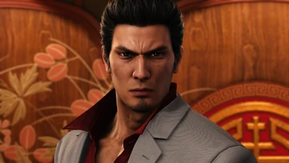

Skills and Abilities

Very powerful combatant, skilled at armed and unarmed combat. His fighting style is just street fighting.
His famous move is the Tiger Drop.

"If you're ready to die, then come at me!"
He's the main character from the Like a Dragon series made by Ryu ga Gotoku studios and publisher SEGA.
He's very quiet and reserve, has strong sense of justice, very loyal to his friends, persevering because he faced a lot of challenges.
Also he's a fun guy to hangout with.
Very powerful combatant, skilled at armed and unarmed combat. His fighting style is just street fighting.
His famous move is the Tiger Drop.